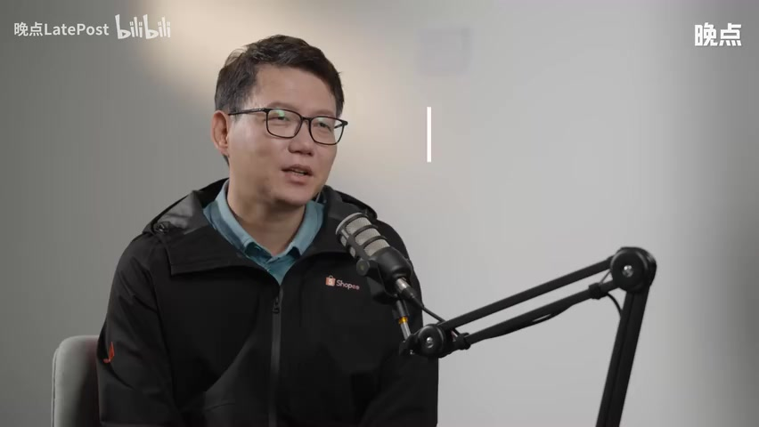

CHAPTER 01从市场规模与泼水节故事讲起
刘江宏讲述自己的经营经验；案例和判断依其口述整理，不代表所有市场均如此。 本页沿原视频顺序保留讨论、例子、追问和限定。少数专名与断句可能听辨有误，重要细节请用时间码回听原视频。

开场建立跨境电商的真实任务：当地需求、商品、价格与到货体验。
当年做这件事情的时候，我们只做对了一个判断：市场规模判断是正确的。十年前要开拓市场，很多时候需要一家一家商家去谈。我说用电商的思路来去做物流，其实最核心的点就是在这些基本的物流的这些规律上面，把我们电商的需求在每一个节点上进行细化。我觉得谦逊不仅仅只是低调，而是要承认这个世界上还有比我们想象到的更好的一些事情。然后我们带着这样的一种对未知敬畏的态度去学习这些事情。想象你在泰国曼谷旅游偶遇泼水节，看着人们聚在街头互相泼水欢笑，你很想加入，但忘买水枪，这时你会怎么做？
以前你需要提前一两周在电商平台下单，或忍受线下店铺有限的款式和高昂的溢价，但现在你只需要打开最快几小时，就能拿到符合你心意的高战力、高颜值的水枪。这些当天就能收到的水枪只是一个例子。开启跨境业务的这十年来，在不断收集并满足用户的需求，把中国丰富的商品销往东南亚和拉美。全球市场复杂多变，很多尝试做全球生意的公司要么无法准确收集一线的信息，要么收集了却无法落实，但Shopee都做到了。本期节目我们邀请到Shopee跨境业务总经理刘江宏，他十年前加入Shopee在, 东南亚、拉美等国长期驻扎，他分享了Shopee跨境了十年历程，从创业的探索期，到疫情带来的高速增长，再到回调提速。
回望过去，他说，世界很大，要始终承认存在比他们已经想到的更好的方式，他们甚至将保持谦逊写入公司价值观。这四个字是理解刷皮这家公司的关键，也是所有出海者做全球生意应有的姿态。欢迎大家来到晚点聊，我是主播郑可舒。今天我们非常高兴的邀请到了Shopee的跨境业务总经理刘江宏先生。江宏先跟大家打个招呼吧。大家好，晚点的听众朋友们大家好，我是刘江宏。其实小在这个跨境业务已经深耕十年了嘛。泰国的泼水节在四月中下旬的时候刚刚举办，然后削也是忙了一波这个大促。
江虹你可以大概讲讲你观察到的十年前的大家参加泼水节的这个状况和现在的状况对比嘛。泼水节是一个非常有社区性的这样的一个节日，它讲究的更多的是一种参与感。其实真的从本地人的这个观念当中啊，其实准备的多好不重要，关键是这种参与当中的这种被所有人淋失，也淋湿别人的这样的一种参与感。其实很多时候就是水桶、水盆啊、水桶呀，然后一些水枪呀这样的一些参与的工具，是可以说我们作为零售行业参与到这样的一个泼水节的准备工作当中去的那随着我们电商在泰国开始发展的之后呢，我们也给了很多当地人参与过程当中的一些灵感，让他们感觉到可以把这件事情做做的怎么更加好玩一点啊。
比方说水枪的类型呀，比方说把自己保护起来的这个雨衣啊这样的一些丰富度对吧？这个是我觉得很多的灵感是来自于我们给当地消费者提供更多的这样的一个选择，这是我们第一个感受到的。第二个感受到的呢是说这个便利性它的这个提升之前很多时候的这些准备工作，要么是提前几周去商场大的商场线下商超里面去购买。或者是如果一时兴起去到这个泼水节的这个节日的现场，是在街道边上一些这些线下的小小摊贩对吧？现场卖给这些游客或者是当地人一些啊设备，让他参与其中。
那现在呢我们把电商的这个线线上的购物和线下的这个delivery之间的这个距离拉的更加近了。我们自己从电商的角度来说，提前一两个月就要开始为泼水节的这个节日氛围，节日的这些装备要开始做准备。那消费者呢也大概只需要提前一个星期或者几天开始去准备，甚至呢有的时候早上出门之前，你下单几个小时之后，你也能收到这样的一个装备来参与其中。十年前正好也是你加入小的时间点啊，那个时候其实大家可能对欧美市场会更有感知一些，就对东南亚市场其实都不怎么了解。
然后包括小那时候也刚成立才一年的时间，当时你是为什么决定要加入这家公司呢？其实现在回想起来就有点像你开车的时候拿后视镜看后面啊，回答这个问题的话，我觉得肯定我们会总结出来很多很多道理啊。但我觉得其实当时其实也没有真的想那么多。其实主要还是我们几个当时早期的同学和我们的同事是大家都互相认识的，是一群互相信任的人。在那个时候做shopping，其实很多事情是看的不是那么清楚的啊，大家只能说是一边走一边看一边探索。
然后在这个过程当中慢慢的找到一些新的方法。那其实做这件事情可能相反倒不重要，更重要的可能是那群人嘛大家互相信任，可以开始这段旅程。那当时你刚接手这个业务的时候，东南亚电商的整体状况大概是什么样的呢？可以用一些画面来让我们就是更直观的体验一下吗？两个维度第一个维度是咱们整体的这个市场还是一个以线下消费为主的这样的一个布局。很多东南亚的这些市场的这些首都的地区，经济发达的地区，其实在核心的地带，它的购物体验和我们在全世界绝大多数的这些一线城市是非常类似的。
非常大的这个商城呐，非常便利的这些街道边的这些零售业主呀，你不会感觉到这样的一个产品丰富度啊是有什么问题的。但是非常显著的特点是你就从这些市中心，这些大的商城走出去，大概几个几个街区啊，走进一些小巷子，你会看到一个非常非常不一样的世界。这里的这个更多的是一些非常简单的可以供选择的这些产品呢，也少了很多，也没有什么可以议价的空间啊，基本上就是他卖什么，你要买什么这样的一个场景啊。后来呢我也发现这样的一些情况也不只是出现在一两个城市啊，基本上整个东南亚绝大多数的这些一线城市都会有这个情况。
二线甚至偏远的地方这种情况就更加的明显了。就换句话说就是说线下的这个整个零售的布局是非常的不均衡的那第二个呢是线上的这个体验在当时还处在一个比较萌芽的状态，可供选择的产品也不多。在交付的体验当中有很多很多的这些摩擦啊，比方说支付的方式并没有那么多，很多的这些支付都还不是说马上线上就可以付钱就成功了，你可能还要再去线下再去支付啊。送货呢也不一定是今天买当天能收到或者是明天能收到，甚至有可能是几天之后啊，所以所以这个过程是由中间是有很多很多的这些摩擦，所以这也是当时整个电商的渗透率还处在一个几乎没有的一个状态，所以就是多快好省，其实当时都做不到啊，应该说是哪个都看不到。
当时你们最开始要拓展这样的一个市场的时候，你们最首先着手做的事情是什么呢？因为听起来有很多方面，很多环节其实都是需要去改善的，太多事情要做了，供给端啦、需求端啦、基础建设端啦，核心的我们还是要先了解我们的这个消费者，因为我们相信电商的这个这个形式是会给当地带来一些不一样的变化。比方说我们会觉得来自城市以外的这些用户，他们应该可以接触到和城市里面用户一样的丰富度的产品。那同时呢从我们供给端，我们的供应链端，不管是本地的卖家还是我们跨境的卖家。
他们的产品是应该可以被全世界更多的这些消费者所看到的。然后呢在这个交易的过程当中，我们应该可以把它做的更加顺畅一点。今天的那个话叫做丝滑一点。我们当时有一些比较早期的一些观察。第一个观察呢是消费者这一层面，他们更多的是希望能够看到产品的丰富度。然后同时呢东南亚的消费者对于价格的敏感度是非常非常的高的。但是这也有另外一个观察是说他们对于这个体验上面的一些阻碍还是有一些宽容度的。比方说这个送货啊，当时他们还是可以容忍，比方说三天、五天甚至一个星期啊，所以这给了我们一个很大的启示，就是说先解决什么问题啊，再解决什么问题。
我们先还是要解决这个丰富度的问题，价格的竞争力的问题。但是呢我们给了我们一点时间的这样的一个空间，让我们可以把这些基础建设能够尽快的做好。所以我们当时做的一些比较重要的一些决定，这也是直接影响了我们为什么在16年的时候要在中国开建这个办公室的一个决定。就是充分利用咱们中国供应链的这个宽度和深度啊，把我们平台上面的这个产品的丰富度做起来啊。所以当时16年的时候，我们来到国内，先是在深圳建立了我们的第一个办公室。
然后随着时间的推移，我们也把我们的办公室一步一步走向了产业带。然后在华东在很多产业带的深处建立了我们的办公室，把这个产品的丰富度做起来。然后呢，随之而来的呢就是我们在各个地方啊，在跨境物流端，在本地的物流端，把这些物流的基础建设和我们的合作伙伴一起建立起来。所以总结下来大概一块儿就是卖家卖家招募，就是解决这个商品的丰富度的问题和价格的问题。还有一块就是支付啊，物流这些基础设施建设啊，那我们先聊一下那个卖家招募的这个事儿。
就因为当时其实消费刚开始做没多久，然后可能很国内已经有一些做跨境电商的商家，但是他们大多数是以欧美市场为主的，就你怎么去劝说他们就是入驻Shopee这个平台，信任Shopee这个平台，并且相信在东南亚也是能挣到钱的呢？你说的一点都没错，其实十年前大家我们的卖家群体对于市场的理解来讲，应该主要海外还是以欧美为主。国内市场当然大家也很了解啊，今天我们经常会说一个词叫做第一性原理first principle。
我我自己对这个first principle的理解呢，其中一个很重要的点就是说我们理解一件事情的时候，应该要回到它的客观本质，而不是只是通过我们的一些类比，或者说通过一些我们熟悉的东西来去认知一些事情。对于我们这些卖家来讲呢，东南亚市场不管是他的认知的熟悉度，还是可以他们可以很轻松的拿来一些东西做类比呢，在那个时候都不是一个非常好的一个市场。那所以我们还是要帮助他们能够回到一些这些对于市场认知的一些非常基本的东西。
其实一开始的时候也没有特别多的窍门。我们很多时候最早期的时候是一家一家的去去访问，去劝说。比方说我们先从这个市场的规模开始说起。举个例子，比方说咱们以服装这个品类来说啊，因为东南亚四季是夏天，秋冬装，它就没有太强的适配性啊，我春夏装的适配性会更高一点。我们也是在这个当中要做出大量的一些取舍，战略上的一些取舍。比方说我们到底还是去死磕一些当时在国内头部非常著名的一些跨境卖家。在国内市场，在欧美市场做的非常好的，希望把他们拉进来做东南亚市场。
还是说呢我们去这些供应链适配度比较高的地方，愿意去让一些当时还没有显山显水的这些卖家跟我们做一些早期的尝试啊，他们有他们的闯劲，我们有我们的一个风险的承受度啊，那大家在这件事情上面可以做成一些契合。这个是我们在早期的时候做了一个还蛮大胆的一个决定啊，我们并没有一味的去追求那些头部的卖家，而去更多的是关注到这样的一个供应链的适配度。因为我们感觉到卖家的对于新市场，他其实也是有他自己的一个耐心的。如果在这个过程当中探索的过程当中，他们并没有及早的获得到这样的一个正面反馈的话，这个耐心也会慢慢的消失。
那我们就会抓住这样的一个机会，然后通过供应链的这个适配度，尽早的给他一些正面的反馈。
CHAPTER 02供给与本地化的早期试错
回顾中国卖家招募、品类选择、品牌与消费者反馈。
那这其实对你们团队，就是对于东南亚市场的了解程度还是提高了，蛮提出了蛮高的要求。因为你们需要知道什么样的产品是真正适合东南亚市场的，而且你们要承受一个风险，就是如果你们判断不准的话，卖家的耐心是会被磨没的。是的，那你们怎么确保就是你们能找到真正定位到那些真正当地消费者需要的那些适配性比较高的品类呢？十年前的时候啊，当我们来到中国去开跨境电商这个业务的时候，我们打开国内的电商网站，或者说我们去到任何一个产业带。
那种感觉就像一个小朋友，三岁的小朋友进到一个糖果店的感觉一样。就是你突然一下看到这么好玩、这么好看、这么丰富的产品的时候，你你会觉得你什么都想要，什么都都是你喜欢的对吧？就是有一种无所适从的那种满足感。我们想把什么东西都搬到东南亚去。但是后来我们也发现，其实这种只求广的这种方式，并不能给到我们很快的去把抓住这个市场最核心的需求。所以我们也开始做了一些聚焦，观察一下我们平台上面主要的消费者是什么。那他们在当时的一个消费习惯是什么？
那我觉得最重要的一个在早期的消费者都是年轻人啊，就讲的具体一点就是大学生和大学刚刚毕业拿到第一份薪水的这样的一群年轻人，对于时尚的感觉是最强烈的。我们希望今天穿的衣服跟昨天不一样，对吧？是一些最新的最潮的衣服，我们希望能够用上最好最新的这些电子产品啊，最新的一些生活用品。所以我们也在这个方面进行了一些有针对性的优化。随着时间的推移，他们开始有了自己的家庭啊，他们也只在职场上的发展有了更好的发展，所以他们对于生活的品质的要求越来越高啊，一从一开始的这个追求新追求不一样，然后慢慢的开始追求品质上的提升。
那我们也开始把品牌呀，把这些家电呢，把这些家庭用的这些产品慢慢的带给了消费者。我还记得蛮清楚的一点啊，就是就最早期的时候啊，我们给美妆的这些品牌的一些指导性的意见，就是说整个的这个东南亚的年轻女性的这个消费习惯还是偏日韩一点。那我们觉得这是我们的一个比较深的理解了啊，打引号的深的理解了。然后我们的很多这些美妆品牌呢也跟着我们的意见做了大量的产品的开发。然后到了一段大概几个月之后呢，他们开始给我们一些反馈。
就是说他们也会发现一些在不同的市场层面的一些更加细节的东西。就算是日韩日韩的这个风格，但是在功能性上面，不同的市场也是有它不同的倾向性啊。比方说泰国会更加在意美白的功效啊，那那菲律宾呢可能会对遮瑕会看的更重一点。所以这是一个我们在跑起来之后，和我们供应链的从业者之间交流出来的一些更加细节的东西。那这个东西我们也很快的在我们的营销呀，在我们的这个市场的这个选择，市场供应链的选择当中也加入了这些因素。
那我们也能看到这个很好的结果。刚才有提到一些就是在招揽这些卖家的时候，你们去上门拜访，你们会告诉他们这个东南亚市场的这个规模。你们说的话他们当时都信吗？十年前真的说句老实话，不信了。很多时候是一家一家的要去磨的，包括甚至这种磨都不只是在嘴皮子上面磨。我们对于某一些我们非常看好的，就是他在产品适配度呀，他们的风险上面比较承受力比较强的这些卖家。我们当时甚至有很长一段时间，我们会和他们一起驻场的去解决一些当时的一些现场的一些问题。
包括说怎么去把这些产品翻译成当地语言啊，包括说一些当地语言的客服，甚至包括说一些他们的遇到的一些具体的发货呀系统上面的一些问题。我觉得这个过程当中呢，也不一定都是他们的问题，有的时候也是我们自己的问题，我们也毕竟是在一个早期的阶段。但是我能看到的是说，这种在那个阶段的时候，大家的一种互相的信任啊，我们大家抱着一个心态，还是说一起想把这个生意做好，想把这个市场能够做成一个被证实的一个增量的市场。所以这种一起走陪伴式的互相信任的一个成长关系，其实我觉得是当时一个非常让我现在回想起来还觉得很非常宝贵的一个一个经历。
第一批卖家在这样的一个过程当中跑起来了，跑顺了，我们对自己有了更强的信心，这个市场对于我们也有更强的信心。那后面的很多的后面的这些卖家的进来，他就变得更加的顺畅了。所以我觉得如果我用今天大家很喜欢用的一个比喻叫飞轮的话哈，早期的时候呢我觉得这个飞轮要想让它动起来，可以讲是我们和这个卖家一起踩下了第一次的这个轮子，让它转动起来。但随着这个轮子转的越来越顺，那它也就越来越快。然后也会有更多的这样的一些卖家骑上我们这个轮子所所载动的这辆车，有很多很多的例子啊。
就是这里面我觉得遇到的一些困难，其实也是把我们之间的这个信任放在一个非常危急的关头的时候。我们做了一些事情也得到了很多卖家的支持和谅解吧。其中有一个我到现在还记得非常清楚的啊，是17年，也是我们进入国内不久的一一个时间。我们有一大批的跨境的货在东南亚某一个地方的这个海关被卡住了几万单呢啊当时的这个消费者是非常着急的，我们的卖家也很着急。不管是来自内部还是来自于外部的这个舆论和监管的压力，当时都非常非常的大。
因为我们给到卖家一个承诺是说发货之后这段物流是由我们来承担，遇到的问题我们不能后退，我们必须要担住这个问题所带来的这些后果。那个时候我们也没有什么特别的办法，就只能一群人啊飞到那边去，每天就是在仓库和海关之间来回的沟通对账对这些文件如果一遍不成功，一遍没有讲清楚，咱们就再来一遍，再把它整理一下，再重新沟通。这中间除了有语言上的这个不顺畅之外，现当然现在回想起来，语言上的不顺畅可能是最容易解决的问题，对吧？
还有一开始就是信任上的一个偏差。我觉得在现场你把你的人摆在别人的面前，把这些数据摆在别人的面前，本身就是一个赢得别人信任最好的一个方式啊，那只是说可能一开始有些事情没有完全的对齐，那我们就把它整理好对齐，然后再以我们最快的速度把这件事情尽快的解决掉。我记得那个时候我们在那边大概来来回回搞了六天多，在我们这个跨境电商行业啊，一个物流上的意外卡了六天多，还是一件非常严重的事情啊。我当中的绝大部分的这些产品，我们还是把它清出来了，而且很顺利的最后还是送到我们消费者的手上。
我们在这件事情上面啊没有。放松对自己的要求，还是坚持的把这件事情做到我们能做的最好的这样的一个态度。还是赢得了很多我们的卖家的一些信任啊，所以我觉得并不是说这种信任就是在一些风平浪静的时候能够展现出来。恰好才是在这种危机的时候，在这种有一些外在的不顺利的因素的时候，我们可以担当起来这样的一些困难，解决困难的这些职责的时候，恰好是我们卖家给到我们最大信任的时候。就是跨境生意它就是一个链条非常长，不确定性非常高的一个生意。
其实每个环节出一些微小的差错，或者是一些误差的话，后续的影响其实还是蛮大的对整体那个消费者的体验这么说吧，就今天咱们回想起来啊，当年做这件事情的时候，我们只做了一个正确的判断，就是对这个市场的规模这个判断是正确的。其他我们当时对这个市场的很多的判断，现在回想起来都都是有问题的啊。所以说有的时候创业也好，开一个新的业务也好，很多时候当时的信心一大部分应该来自于无知。不过当然也是这件事情有意思的地方啊，做起来之后，不管是流量端，不管是供给端，不管是运营侧基术建设，甚至人才的招募，人才的搭建。
很多很多事情都是一些让我们没有办法预料到的一些问题。我们只能见招拆招，然后在这个过程当中逐渐建立起来这家公司这个团队的一些文化和一些可以沉淀下来的东西。那当然我们的结果肯定是把消比中国对针对我们中国供应链出海这件事情做的更加顺畅。比如你们当时有什么关于市场的判断，后来被认识是错的。然后你们是怎么发现这个错误并且去做出调整了呢？刚才我提到了那个我们在卖家招募端的那个认那个判断，就是说到底是先聚焦在我们头部的卖家，还是去关注在产品适配度上面的这些敢于冒险的卖家是一个例子。
那另外一个例子呢，我想看说一下的就是在消费者这一端。当电商作为一个新的业态的时候，我们其实很多时候把这个我们的这样的一个电商的这种消费形式推出去的时候，是以大促活动这个方式来去推出去的那大促这件事情怎么做才有效？我们也做了大量大量的尝试。在国内大家都非常熟悉的，像618年终大促呀，双十一的这个年底的这个大促呀都是。然后再加上春节的这个大促，对吧？但是在东南亚它的大促节奏到底应该是什么样子的，这个我们当中也有一些探讨。
有的有一些市场呢我们尝试过以发行日为作为一个主要的这个大促的节奏啊。因为有些市场它大概是每两周发一次薪水。那有些市场呢我们也试图去引入一些类似于国内的这种连头、连中、连尾啊，我们也做了这样的一些尝试。然后后来呢我们发现这个过程当中呢，其实我们的消费者对于大促的这个感知其实是比较的欢迎的。就是他们并不会出现一些疲倦感啊，所以我们又开始尝试了。那我们就把它把大促常态化作为一个方式，是不是可行啊？我们尝试了在每个月的某一天啊，我们叫double double就是比方说5月5号、6月6号、7月7号这个日子，然后去做这样的一个促销，这是不是一个很好的一个方式啊？
这是我们在这个过程当中的一些探讨尝试。那最终呢在落地的时候呢，在不同的市场我们也做了一些不一样的一些优化啊，有些市场在某些时时间段，它可能是会作为一个主要的大促的一个方式。那有些市场呢我们还是把它作为一个辅助的一个方式啊。那这里面比方说像在巴西三月份的时候，它市场里面本身就是有一个传统是3月15号消费者日作为一个大促的节点。那我们在3月3号那一天呢，就只是作为一个辅助性的促销。所以这也是一个我们在这个过程当中去不断的尝试，不断的去打磨的这样的一个过程。
所以简单的来讲，我们其实一很多事情没有一个标准答案啊，我们也只是在这个过程当中一边去尝试，一边去探索。然后如果不成功的话呢，再回来再换一种方法啊，这种小步快跑，快速迭代和消费者之间慢慢慢慢达成这样的一个共识的这样的一个过程。我我非常喜欢干一件事情，就是到一个地方，不是住在酒店里面哈，住在那个l bnb的这种这种居民区啊，像当地人一样去超市买买东西啊，去到处闲逛。
CHAPTER 03促销节奏、信任与物流
讨论本地节庆、发薪日、平台促销及跨境履约系统。
逛的时候有的时候会问一些非常具体的非常简单的问题。举一个例子，其实我记得我去墨西哥那段时间，有的时候在外面逛的时候，我会突然发现每天这条路都很好走。但是有的时候突然一下子就一堆人在那排队，然后我才知道哦，原来那个时候就是发薪日。他们在那个时候会去固定的去买一些生活的必需品啊，在在那个时候有的时候呢也可能是那一天正好是他们海外的亲戚寄钱回来啊，他们去那个取钱。就是这种你只要在当地住了，你就不可能忽视的这些细节，在当地住一住。
这个工作习惯你是加入Shopee之后就一直保持的一个习惯是吗？应该说是我发现了这样的一个蛮有意思的工作方式。因为首先当时我们做东南亚这件事情，我们自己也不知道东南亚这个市场它的具体情况是什么样子。然后我们也发现，其实除我们自己不知道，也没有人知道，大家都不知道。那最好的方法也就是像当地人一样生活，去自己去获取这些第一手的信息。而且后面我们也发现这样的一个过程也是蛮有意思的啊。因为他给你看到了一些在办公室里面，在excel power point里面看不到的一些。
非常重要的insisight啊，我觉得这个过程让我们感觉到有很多的一些收获。举一个很简单的例子，就是我们当时在搭建我们本地的这个物流建设的时候，我们开始在想说，那我们最终最后的那一公里派送是到底用摩托车，还是用三轮车，还是用小的皮卡，还是用卡车，对吧？这个都都可以是答案对吧？但但是到底哪一个是更好的选择？那这个这个问题其实只要你在当地的街道站一站，你就知道其实不需要选择的，它就是摩托车。因为有些街道太窄了，你三轮车都开不进去，对吧？
摩托车是唯一一个能开进去的那有些路太堵了，你只有摩托车才有那样的一些灵活性，对吧？那有些地方它还是一些比较一些不太好的路啊，也可能只有摩托车有这样的一些灵活性。那如果你一旦清晰的认识到摩托车是一个最好的选择的话，那接下来所有的这些配送的我们的这些路线的规划呀，打包的这些规范呐，这些人员的招募呀，所有的这些东西，他其实就顺其自然的就可以往下这么走下去了。那其实在国内也有很多类似的这样的一些经验。刚才我提到了我们在早期的时候跟卖家之间是并排手把手的一起把这个生意做起来。
那在这个过程当中呢，有的时候卖家跟我们一起喝个下，喝个咖啡呀、吃个饭的时候也会埋怨几牢骚几句啊，就是比方说招人很困难，或者说东南亚这种特别的经验的这些人才是缺乏的。也是激发了我们当时就在18年19年开始在全国范围之内做的一波的这个培训机构的认证，和一些学校啊各级院校之间的一些合作。然后给到我们的卖家提供各类这样的一些人才啊，我们再把时间倒回Shopee创立初期的那个时候，就你们其实是要从零开始搭建跨境物流的这个基础设施的。
我看你之前在采访里有提到过一句话，是说你们当时是用做电商的思维去做物流。但是当时可能市面上很多其他公司是用做物流的这个思维去做物流。这两个思维有什么区别呢？物流是一个非常古老的行业，有很多很多行业里面成功的经验，成功的这些方法论在这边。当我们开始做电商的物流的时候，我们也从这些成功的方法论，非常好的这些实践当中学到了很多的东西。举一个例子，比方说物流其实最终都是在灵活性和规模化当中找一个平衡点。那电商物流和传统物流最大的一个区别就是我们在平衡这个灵活性和规模化的这个取舍当中，会有一些不同的判断。
讲的具体一点，比方说我们在卖家发货收货这个环节，我们就要选择更加灵活。因为国内的卖家它分布是比较广的，不但是在沿海城市，甚至在很多内陆城市。最近这段时间的这个跨境电商的兴起，也让他们的这个产业带有了更多的出海的机会。所以我们会把我们的揽货点，把我们的转运仓建的离他们更近一点。我们选择了以灵活的方式去解决这个问题。那到了国际干线这一块呢，我们又选择了规模化。利用我们的规模的优势，把这个干线物流当中的环节更多的主动性把握在自己的手上，把这些问题的共性能够总结起来解决掉。
那到了末端的派送呢，我们又回到了灵活性。因为我们电商的末端是最小的单元体，也就是个人。我们真的是要送到每一个街道，每一家、每一户去。那这个时候我们又要把整个物流的链路的设计要变得极其的灵活。用三轮车像我刚才说的，我们甚至可能在有些地方还需要坐船啊，坐飞机，甚至在派送的时间上面要给到一些灵活性。所以我说用电商的思路来去做物流，其实最核心的点就是在这些基本的物流的这些规律上面。一把我们电商的需求在每一个节点上进行细化。
如果让你用简单的一句话来概括216年到19年的这个比较初创的这个阶段的话，你会怎么概括呢？那个时候大家是带着极大的兴奋心探索这个未知的领域，然后我们也从中得到了非常好的一些反馈。我们的对于这个市场的准市场规模的判断是正确的。我们得到了大量的消费者和我们卖家的一些信任啊，那是一个高速成长的时情。在加入Shopee品之前，其实你做的不是电商行业。那进入消之后，你开始从事这个电商这种特别又是跨境电商环节。
这么长这么重的一个地面的生意，你觉得对你个人来说的话，最大的挑战或者最大的区别是什么？我觉得用两个字来形容，肯定就是具体消费者变成了一个很具体的人和群体，啊，我们的供应链变成了很具体的人和工厂，我们的物流变成了很具体的环节，啊，我们的支付变成了很具体的这些流程。所有的这些事情在我加入消息之后都变得非常非常的具体。我觉得这种具体的感知是非常让人兴奋的那紧接着像你所说的16到19的这个令人兴奋的高速增长的时期，经过之后，其实就迎来疫情。
疫情是把东南亚整体的这个线上电商的这个渗透率往前推了一大步的一个阶段。当时Shopee的业绩有非常好的表现，非常高的增长。那当时你们看到这些飙升的数字的时候，你是一个什么样的心情和状态呢？一开始的时候是非常非常短暂的兴奋，因为这种速度越快，你个人的兴奋感会越强，也是很快的就进入到了一种对于这种新的速度的一种未知感。我觉得当时我们做了两件事情吧。第一件事情还是看到这样的一个大的流量涌入来之后，它背后的原因和它的特点是什么？
因为你如果不对这件事情有一个很深的理解的话，那这些流量我们也没有办法把它固定住，把它留下来。那第二个呢也是想借着这个机会，对于我们之前所搭建的所有的这一系列的管理，这些技础建设做一次非常重要的压力测试，看看他能不能承受得住这样的一个冲击。我先说第一点啊，这个流量的进来之后，我们发现几个蛮有意思的特点。第一个就是他的这个用户的丰富度比以前上了一个很大的台阶。他除了从我们一开始的这些年轻人啊，然后偏年轻的人，然后现在变成了整个社会当中的男女老少，一下子都开始想要尝试一下电商了。
那他的这个需求的丰富度就会变得比我们之前想象的要复杂的多的多。我们要怎么能够把我们的服务呀，把我们的供给呀，都要匹配上这些丰富的需求。另外一个呢是他们对于产品的需求也变得跟我们之前想象的不太一样了。哎，从一开始我们的日用品，消费级的日用品到后面的甚至像食品呀，像这些生活必需品，也是在当时一个非常大的一个需求。那这是在需求端。那同时呢在我们的供给端这一块，我们也在看我们能不能把我们的这个整个的基础建设变得更加的有韧性，能够迎接好这样的一个增长。
那当时呢在疫情期间我们也都知道，其实有很多的环节其实并不像我们想象的那么稳定，对吧？不管是物流也好，支付也好，甚至是交沟通交流这一块，都有的时候不是那么的顺畅。那也是正好借着这个机会呢，我们把自己的很多的一些后备的这些准备的计划又重新打磨了一下。如果一个节点堵住了，我们能不能很快的分量到别的节点？如果一条支付渠道有问题，我们能不能很快的切换到别的支付渠道，如此类推。我们也正好借着这个机会，把我们的技术建设做了一次新的一次升级。
能够面对这样的一个大的涌入的需求，能够满足这样的一个需求所带来的这些挑战。另外你们当时还有观察到什么新的用户需求的变化吗？以及你们是怎么观察到这个变化的呢？怎么确保你们能够这个观察是准确的观察到变化，其实这件事情就像我一直说的，如果你像一个当地人一样生活的话，其实并不太难。
CHAPTER 04疫情与内容电商带来的变化
需求波动、团队成长、拉美新市场及内容化购物逐一展开。
我记得疫情的早期的时候，2 3月份的时候，国内还在早春期间。虽然东南亚对于居家服的需求是非常旺盛的，但是早春的时候国内卖的都还是一些偏厚的居家服啊。所以我们很快的把这些信息带给到我们的产业带。之后呢，他们也会有针对性的针对东南亚生产一些提前生产一些这些夏季的这些衣服，然后帮助我们可以在更有针对性的针对东南亚的这些消费者的需求做出一些回应。那这样的例子有很多啊，我们就是也是一些小步快跑的方式，先用我们在当地化的这些第一手的信息，给到我们一些早期的启动信号。
然后在这个启动之后，小步快跑不停的迭代，给到我们一些新的一些灵感，把这些需求打磨的更加好。所以他也不是说你们一开始就定了一个比较确定的大的这个战略方向的东西，而是可能看到当下消费者有什么需求起来了，你们就赶紧给他补上。对这个过程当中速度其实非常重要。能够快速的发现这些需求，准确的把握住它，然后以快速的速度再把它执行出来。这一系列当中呢，对于我们整个反应速度呀，组织类的这个速度要求都非常高。你们怎么确保就是够快呢？
一方面呢是长期的这种默契，我们在当地的这个团队和我们在国内的团队之间的这种沟通的顺畅性、信任感。那另外一方面也是在组织架构上面，确保我们所有的这些决定一旦定下来了之后，在执行侧能够尽快的做下去。这也是我们在疫情期间，当时高速发展当中的一个遇到的一个问题。我们在早期的时候呢，因为和卖家的关系非常的紧密，所以我们很多的这些团队也基本上是围绕着卖家所建立起来的。但是随着我们的这个业务的复杂度越来越高啊，我们的知识就开始出现了垂直化。
所以我们在那个时候也把我们的组织进行了一些调整啊，我们会把组织的专业性更加提到一个更高的要求。比方说我们在卖家的品类上面卖家管理的品类上面进行了一些细分。在卖家的阶段上面，业务模式上面也做出了一些细分。同时我们也看到组织当中一些年轻的人才成长的非常的快。他们其实从一开始的冲锋变成了后面的可以已经已经成熟到可以带一些团队的这样的一些能力了。所以我们也非常希望把这些有冲劲、有组织能力、有领导能力的年轻人能够提拔上来。
我们也有一些新的项目，需要一些初生牛犊不怕虎的一些年轻人，让他们可以在一些1到100的项目上面，1到100的这些方向上面做的更加专业一点。同时呢当时我们刚刚打开了拉美市场啊，这又是一个我们需要从0到1，几乎从没有经验要开始重新建立的这样的一些项目当中。我们让一些年轻人起到了带头的作用。像我们自己在16年17年从零做shopping跨境电商的那种感觉一样，让他们可以在拉美闯出一番新的天地。你也在拉美那边驻扎过很长时间，你是这个时期过去的吗？
对我21年去在墨西哥，当时去墨西哥的印象怎么样？因为他的整个状况跟东南亚差别应该会非常大，很不一样的一个感觉。就是不管是表面上还是你看数字上面，是一个非常不一样的大陆最大的感觉我觉得是你不管之前你认为对这个地方有多了解，等到你踏上这个土地的时候，你就会发现你之前的了解可能在一天或者是半天之内就已经不管用了，你要重新认识这个地方。这也是我当时刚刚进入小去了解东南亚的像泰国呀、菲律宾啊这些市场时的同样的这个感觉一样。
我觉得把自己放松，把自己放到一个无知的这样的一个态度上面重新学习，其实是一个蛮有意思的经历啊。包括在墨西哥的很多的城市行走，然后就感受一下当地人是怎么样生活的，当地的普通人是怎么样生活的。然后学习一下当地的语言呢，和当地人有一些生活上的交流啊，比方说就在外面买买菜，像去一些当地人平时去的地方。这个我觉得这些过程当中，你学到的东西会比你从二手的信息当中汲取到的会更加生动一点，也对你自己对这个市场的理解会更加深刻一点。
所以其实在Shopee的过往的每个时期，其实你们做的都是在不断的回到最基本的问题，就是用户真的需要什么？然后哪些体验还没有被满足，你们就按照这个用户的需求去做这个产品功能上的完善和优化。我听说Shopee内部有一个共识啊，就是很多决策不是说靠经验推演出来的，而是依赖一线的观察和数据反馈来做出的。这个共识是什么时候形成的呢？我觉得这个共识是从我们一定是从我们一开始的时候，不断的在实践当中最终沉淀下来的。
如果你问我说为什么会沉淀下来这样的一个共识，我觉得可能可能很大一个原因是因为我们一些早期的加入的这些员工都是理工科的背景。我记得我们在读书的时候啊，如果做理科的话，我们其实一个很重要的目标或者inspiration是说怎么能够在现有的这个发展，现有的认知当中突破。如果讲的再具体一点的话，就像如果达到一个目标有十条路，我们做科学的人都希望自己能够是那个找出第11条路的这样的一个一个人。但是我后面到了商业这个世界当中呢，我发现在商业世界当中很多时候是不需要找到第11条路的。
而更多的是在这十条路当中判断出来当中其中哪一条路是能够最走的最快、最高效，最容易达到我们的目标，这是那个判断的过程。但是你不能只判断不去做，你还是要选定了这条路之后往下做。而且在这个做的过程当中，你一旦你发现这条路是对的那速度就变得非常的重要，也就是你要沿着这条路去那个快速的跑，然后再给自己一个判断什么时候又到了，你需要慢下来看看前面有十条路的时候做出一个判断。在我们的这个消费的成长过程当中，一开始肯定是有很多很多这样的需要判断的时候啊，我们到底是以B2B的形式，B2C的形式，每一个市场切入的方式到底是以什么样的人群，有多少共性，有多少差异，对吧？
这个是我们一开始有做多大量的判断。幸运的是一两年之后，这些判断当中有一些是已经被验证了，那我们就要快速的去跑。那其中疫情也是一个需要重新判断的时候。比方说这个时候我们是被流量推着走，还是我们主动的在流量当中要做一些更加深入的运营。对于我们之前做出的一些基础建设，是被动的去解决基础建设当中的一些暴露出来的问题。还是说主动的针对这个新的流量，新的这个规模要重新搭建这个我们的基础建设。这都是我们当时需要慢下来去重新做出判断的时候。
那做完判断之后呢，接下来又要再往前快速的去跑。那疫情之后呢又要出现几次这样的判断，其中也包括了我们觉得内容电商在当时是一个新的流量的入口啊，那这个我们应该怎么去做内容电商这一块。那再到我们最近啊，我们觉得整个交付体验当中的速度能不能再往极致的方向去发展，它又是一个需要慢下来去判断的过程。你刚才提到的这个内容电商，然后包包括这个履约的速度，其实就是你们最近做出的在新路口做出的这个新的判断。那我们先聊一下这个内容电商，你们现在看来做内容电商，做短视频，做直播可能是一个非常自然的选项。
就是好像电商平台他做这个事情是非常对的。那你们当时是怎么发现就是可以做这个事情的呢？内容作为东南亚电商的一个入口，这件事情其实在很早的时候我们就已经发现它的这样的一个苗头。因为东南亚的消费者，尤其是年轻人，对于那个社交网络的这个依赖度是非常高的。他们非常喜欢通过一些互相之间的这些交流，以及和当地的网红呀之间的这些影响来去获取信息。而且我们在早期的时候也充分利用了这样的一个消费的习惯。那它的爆发点是来自于疫情以及疫情的中后期。
因为大家的这个外出的局限性，让更多的人，更多的这些商家选择了通过直播来去扩大他们的这个品牌的这个宣宣传和影响力。那我们后来发现当这个直播的这个生态变得越来越成熟的时候，那这个流量的入口也变得越来的越重要。因为它已经慢慢变成了消费者在下单之前的一个非常重要的决定的过程。他们不仅仅只是通过看图片，看这些文字的介绍。他们希望通过更加生动的这样的一些场景化的介绍，功隐藏功能的介绍，重要卖点的介绍来去理解这个产品。
那这个时候我们认为直播电商、内容电商，它已经不再只是是一个辅助性的工具了。它应该慢慢的变成我们一个主要的流量入口。所以我们也开始从。整个的内容电商的生态开始发展起来。当地的这些M N机构呀，网红的机构呀，然后也针对性的给我们中国的出海企业，出海的卖家有对接。这种可以服务到我们国内啊，这些商家在当地内容运营的一些需求的这样的一些合作伙伴。帮助我们国内的这些商家在出海上面，尤其是内容出海上面做到了一个坚实的后备力量。
你们后来越来越确定内容电商这个事情是对的，其实也是基于用户的反馈来做出的。是的，我们当时给很多我们的卖家打了这样的一个比方啊，我们说这就有点像你走进了一个菜市场，有人卖肉有人卖菜。但是呢你很有可能你停下来的那个肉铺或者是卖菜的摊子，是那个吆喝最响的那个摊子。我说直播就是那个吆喝最响的摊子啊，我觉得这个比方很容易被大家所理解。然后慢慢的呢也我们的很多的卖家，不管他自己之前对于自己卖的东西是怎么定位的啊，他也逐渐的接受了通过这种内容的传播，把自己的卖点以一种更加生动的形式传播出去。
那再聊聊这个物流履约提速的这个事情啊，就我们刚才也有聊到，其实Shopee创立之初就在搭建这个端到端的物流体系。你们其实也是把东南亚的整个物流体系，从最开始的可能两三周才能送到，然后慢慢的到了四五日就能送到。但是现在其实你们又是在往次日达、当日达，甚至是几小时就送达的这个路上走。
CHAPTER 05更快交付与经营判断
最后讨论仓配速度、商家关系和保持学习的态度。
你们是什么时候发现东南亚的用户对于这个更快的这个速度有更高的需求的？这个问题问的非常好。因为我们自己对这件事情的认知，其实也是有一个从个人的体感再到它本质的一个理解。我们之前把物流这个东西只是把它看做一个深意，或者说只是把它看做一个流程啊，那这个流程它有它自己的kpi就是他有多少天送到，我们说先是十天，然后后来说是九天、八天、七天，一点点的把这个数字往下降。但是我们实际上没有真正的理解说这个数字往下降对于消费者意味着什么。
直到在24年25年的时候，我们在国内体验到了这种即时零售的这样的一个服务。当我们有一个生活的急需品的时候，比方说我马上要去我的客户那边做一个拜访，但是我忘带我的那个连接线了，电脑的连接线了，我也还要花1个小时到我的客户的办公室，对吧？那我现在下一个单，把这个连接线送到我客户的那个办公室，我到那儿我就能拿到这个线。这个使用场景它非常的自然，送货的速度它不仅仅只是一个时间的缩短。它在感觉上面让消费者觉得电商这个事情离他非常近。
我不知道你有没有这个感觉啊，就是说如果一个东西送的快，实际上我们可能下意识的会感觉到他其实就离我很近，可能真实是没有那么近啊，但是但是他给你一个感觉就是让你感觉很近。但我们一旦感觉到一个东西离自己很近的时候呢，我们会在情感上面和他有更多的这个连接。那这种连接有的时候就会让你感觉到非常熟悉，非常舒服。那这种舒服慢慢也会演变成一种信任感。那这种信任感就会慢慢更加变成了你生活当中不可缺少的一部分。我们一直在努力把小变成各个市场里面我们消费者感觉不可缺少的这一部分。
所以在这种感觉下面我们就重新审视了。那我们在跨境电商的物流这上面还能做些什么？我们先从稳定性做起，从比方说以新加坡为例，一开始我们做到7天左右到新加坡，那我们说我们能不能稳定的做到5个工作日到，我们再提出更高的要求，我们能不能稳定的做到5个自然日到新加坡。那在这个基础上面我们再提高一点，我们能不能提前备货到新加坡的海外仓，能做到次日达，再做到当日达，再做到及时零售几小时达。那这样的话呢，商品不仅仅只是在物理距离上感觉离消费者越近了。
那现在他跟他的生活其实就有这样的一种连接性的感觉，这不仅仅只是物流层次上面数字的减少，它是一个消费者心智上面感觉到电商在他生活当中其所起到的这样的一个作用。它是更加有机的结融合在整个生活当中。现在中国国内这个即时零售的这个电商发展的非常迅速。近两年东南亚其实也很快的就赶上了，也有这个需求，并且你们也在做相关基础设施的建设。那在东南亚这样一个就是变化非常快的非常剧烈的一个市场里面，你们是怎么确保能够找到那些最长久的需求，然后去下最大的功夫把它满足的呢？
如何去判断它是一些短期的还是长期的趋势？我觉得最主要的一点还是要回到我们的用户的场景当中去。之前电商的发展更多的是带着一些很强的计划性的一些需求。那我们也会看到有些需场景的需求，他可能是没有计划的，或者说他就是我马上需要的这样的一些这样的一些场景。那它的确事实上是存在的。即实零售恰好就是这样的一个可以帮助我们满足这些使用场景的一个非常好的方式。那我们也看到了我们之前所积累下来的一些基础建设方面的这个优势。
其中除了我刚才说的这些派送的网络之外，还有就是我们对于消费者需求的这样的一些预判。大量的内部的这些数据，以及我们整个的这个品类的丰富度。那这些优势我们可以集中在一起来去解决这种没有计划性的，或者说是马上就需要的这样的一些购物上面的场景。今年是Shopee跨境业务的十周年啊，也是你加入Shopee的十周年。如果让你用一句话来总结Shopee和你的这十年的话，你会怎么总结呢？我刚才说我们这些做理工的人来做商业世界的东西，就是不停的去判断，然后奔跑判断奔跑。
我觉得如果让我用一句话来总结过去的这十年的话，我觉得是我们非常有幸在一个高速发展的这样的一个赛道上，不停的去重复这样的一个认知的过程。然后我们也借助了这个赛道的高速发展，把我们自己想要做的这件事情做大。同时也给我们在国内的这些卖家和品牌铺了一条非常宽广的通向世界的路。我们的卖家给我一个反馈是说，他们现在觉得需要通往东南亚的路开始是从他们家门口开始的。那这是我觉得在过去的这十年当中，我们所做的这样的一件事情，就是搭了一座从卖家家门口通往世界的一一座桥梁。
听说你到现在还一直保持着就是定期去见一些商家当面交流的这个习惯。之前前两年看你一个采访，当时那篇文章里写说当时你接受采访的时候，你办公室里就放着一只行李箱，因为你马上就要去广东还是哪里去拜访商家。对我觉得跟卖家在一起多交流一下，可以给到我们一些新的一些灵感啊。因为我们在做这个市场的时候，有一些我们自己的沉淀和我们自己的理解。那这个世界毕竟很大，除了东南亚，除了拉美之外，我也相信其他地方世界上其他地方发生的事情对我们也是有一些帮助，也是有一些灵感的。
我觉得这也是我们公司的一个做事情的一个很有意思的文化。就是我们尽我们最大努力去追求我们认为的极致，我们认为的完美。但这与此同时我们也承认这个世界上应该还有更好的解决问题的方法。我们会带着一个非常开放的心态想去听一听学一学啊，这个过程我觉得还是非常的让人有满足感的一种谦逊的态度啊。对的，我们对谦逊这件事情写进了我们公司的文化，这个在其实在很在公司的文化当中不太常见啊。也有很多员工问我们为什么把谦逊写进公司文化？
谦逊是不是就是低调的意思？我觉得谦逊不仅仅只是低调，而是要承认这个世界上还有比我们想象到的更好要更好的一些事情。然后我们带着这样的一种未知，对未知敬畏的态度去学习这些事情。那未来十年对于削皮所在的东南亚和拉美等国际上的市场，还有削这家公司，你有什么展望呢？未来十年会发生什么？我觉得现在这个时候谁都说不准，但是大家也都非常期待啊。我觉得在我们电商行业，我们的消费者的习惯，我们的供应链，我们的流量很有可能都会被重塑。
所以我对于未来十年的展望是非常非常激动的，有点像16年我们刚刚开始在国内做跨境电商这件事情一样。我们知道这是个很巨大的机会，但是我们不知道这个路径是什么。就像这个时候在我们面前又有十条路，我们要去做一个非常小心的判断。然后但是我相信应该很快这个判断就会形成，然后我们又沿着这条路继续快速跑下去。而且这个判断也不只是我们小一个平台会做的。我们的合作伙伴，我们的卖家也会跟我们一起做出正确的判断，把出海这条路重新走一遍，而且走的更加顺畅。
那我们今天就聊到这里，感谢江宏的时间，也感谢晚点。